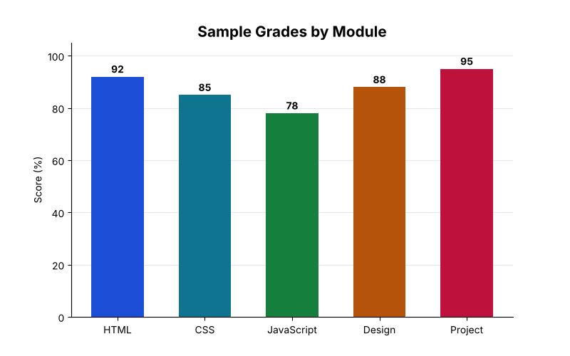

<body>
  <!-- Good: describes what the image shows -->
  

  <!-- Decorative image: empty alt, screen reader skips it -->
  

  <!-- Chart: describe the DATA, not the chart type -->
  

  <!-- BAD examples — avoid these -->
  <!--                         missing alt -->
  <!--            not descriptive -->
  <!--   redundant -->
</body>